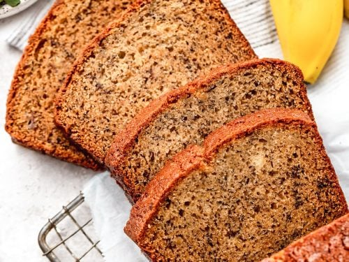

Banana Bread

Desciption
Banana bread is a semi-sweet bread made with mashed
bananas as one of the principle ingredients. Most of
the bread’s sweetness comes from the healthy sugars
naturally present in bananas, so it is considerably
healthier than other sweet baked goods that rely on
added sugars for their delectable taste.
Ingredients
- 2 cups all-purpose flower
- 1 teaspoon baking soda
- 1/4 teaspoon salt
- 3/4 cup brown sugar
- 1/2 cup butter
- 2 eggs (beaten)
- 2 1/3 cups mashed overripe bananas
Steps
-
Preheat the oven to 350 degrees F (175 degrees C).
Lightly grease a 9x5-inch loaf pan.
-
Combine flour, baking soda, and salt in a large
bowl. Beat brown sugar and butter with an electric
mixer in a separate large bowl until smooth. Stir
in eggs and mashed bananas until well blended.
Stir banana mixture into flour mixture until
just combined. Pour batter into the prepared
loaf pan.
-
Bake in the preheated oven until a toothpick
inserted into the center comes out clean, about 60
minutes. Let bread cool in pan for 10 minutes, then
turn out onto a wire rack to cool completely.